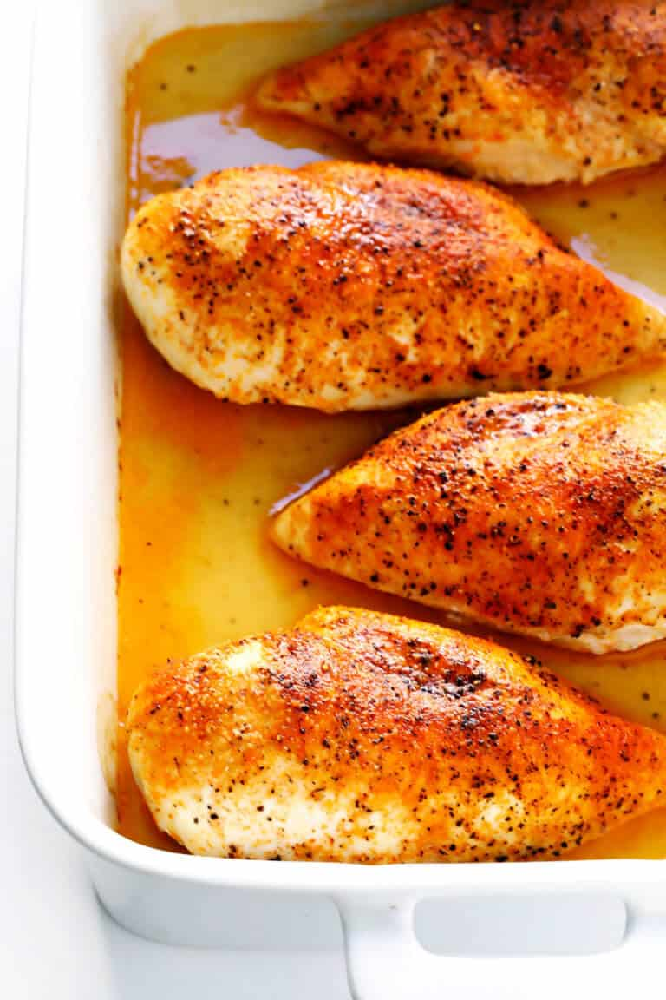
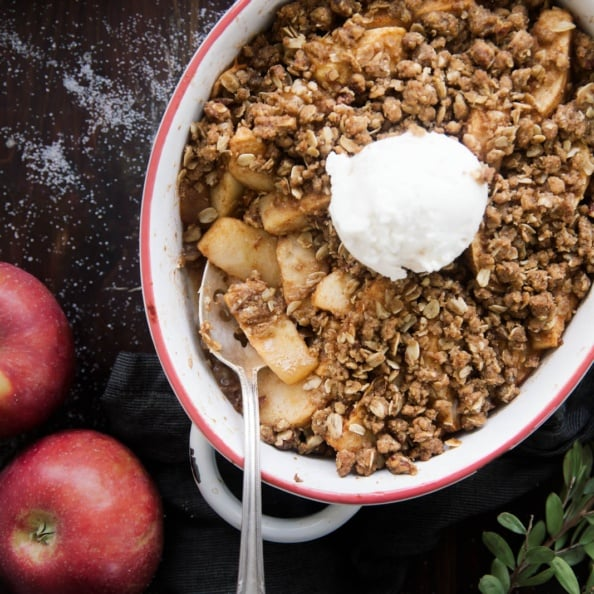
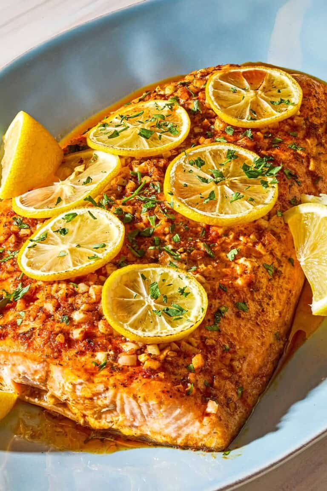

6 Easy Baked Recipes
Baked Veggie Chips
- 1 sweet potato
- 1 beet
- 1 carrot
- 1 tbsp olive oil
- Salt
- Preheat oven to 300°F.
- Thinly slice vegetables.
- Toss slices in oil and salt.
- Lay flat on baking sheet.
- Bake 25–35 minutes, flipping halfway.
Directions:
Simple Chicken Bake
- 2 chicken breasts
- Olive oil
- Salt, pepper, garlic powder
- 1 cup chopped veggies
- Preheat oven to 375°F.
- Place chicken in baking dish.
- Season both sides.
- Add veggies around chicken.
- Drizzle with oil and bake 25–30 minutes.
Directions:
Baked Egg Cups
- 6 eggs
- Spinach
- Shredded cheese
- Salt & pepper
- Preheat oven to 350°F.
- Whisk eggs.
- Stir in spinach, cheese, salt, and pepper.
- Pour into muffin tin.
- Bake 15–18 minutes.
Directions:
Zucchini Bites
- 1 grated zucchini
- 1 egg
- 1/4 cup breadcrumbs
- 1/4 cup cheese
- Salt & pepper
- Preheat oven to 375°F.
- Squeeze water from zucchini.
- Mix ingredients.
- Form small bites.
- Bake 15 minutes.
Directions:
Healthy Apple Crisp
- 3 apples, sliced
- 1/2 cup oats
- 1 tbsp honey
- Cinnamon
- Small pat of butter
- Preheat oven to 350°F.
- Add apple slices to dish.
- Mix oats, honey, cinnamon, butter.
- Sprinkle mixture over apples.
- Bake 25 minutes.
Directions:
Baked Lemon Salmon
- Salmon fillet
- Lemon slices
- Garlic
- Olive oil
- Salt & pepper
- Preheat oven to 375°F.
- Place salmon on foil.
- Season with oil, salt, pepper, garlic.
- Top with lemon slices.
- Seal foil and bake 15–18 minutes.
Directions: